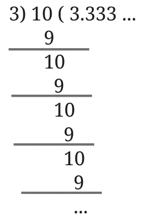
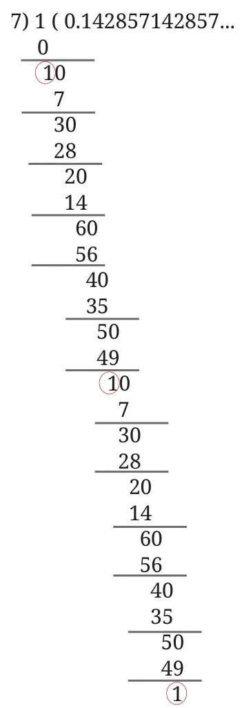

Can you calculate \(10 \div 3\)? Try dividing using long division.
\(10 \rightarrow 1\) Tens \(+\ 0\) Ones.
Step 1: Regroup 1 Tens into 10 Ones. 10 Ones \(\div\ 3 \rightarrow 3\) Ones, and 1 Ones remain.
Step 2: Regroup 1 Ones as 10 Tenths. 10 Tenths \(\div\ 3 \rightarrow 3\) Tenths, and 1 Tenths remain.
Step 3: Regroup 1 Tenths as 10 Hundredths. 10 Hundredths \(\div\ 3 \rightarrow 3\) Hundredths , and 1 Hundredths remain.
Step 4: Regroup 1 Hundredths as 10 Thousandths. 10 Thousandths \(\div\ 3 \rightarrow 3\) Thousandths, and 1 Thousandths remain. Regroup 1 Thousandths as 10 TenThousandths.

This never seems to end! Each time we divide by 3, there is a remainder of 1.
Will this process end?
In long division, we see that at each step we get a remainder of 1. So, the process will never end!
So, \(10 \div 3\) cannot be expressed using a finite number of digits in the decimal form.
\(10 \div 3 = 3.333\ldots\)
There are decimal divisions where the quotient never ends! We will explore such numbers in greater detail in a later class.
Can you find the quotients of \(10 \div 9\), and \(100 \div 11\)?
Now divide 1 by 7 \((1 \div 7)\).
Will this end?

Note all the remainders we get. It starts with 1, then 3, then 2, then 6, and so on. Let us represent this as a chain.

What do you observe? Can you explain why this division never ends?
Not only do the remainders repeat in a cycle, the digits of the quotient also repeat in a cycle!
0.142857 142857 14…